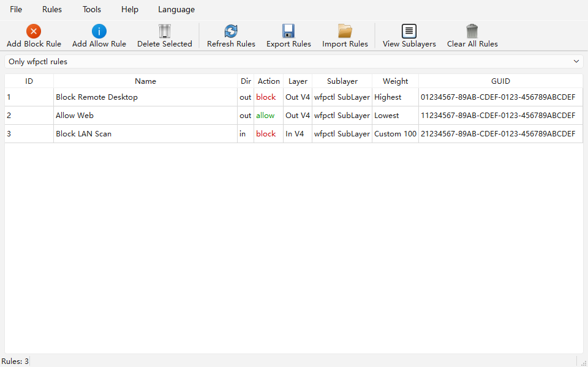

wfpctl
Native Windows CLI (Go) + PyQt6 GUI for high-priority firewall rules on the Windows Filtering Platform (WFP).
Pure user-mode
Talks to fwpuclnt.dll directly — no kernel driver, no service.
Highest priority
Picks the free sub-layer weight dynamically and adds filters at uint64 Max.
Bilingual GUI
English / 中文 switchable from the menu; rules can be exported / imported as JSON.
Wide targets
IPv4 & IPv6, CIDR, port or port range, protocol, in/out, block/allow.
Usage
wfpctl add [-name <name>] -target <ip|cidr> [-direction in|out] [-action block|allow]
[-protocol tcp|udp|<number>] [-port <port|range>] [-priority highest|lowest|custom]
[-weight <uint64>] [-sublayer high|default] [-all-layers]
wfpctl delete -key <filter-GUID>
wfpctl list [-json] [-all] [-sublayer <GUID|name>]
wfpctl sublayers [-json] [-delete [-key <sub-layer-GUID>]]
wfpctl version
wfpctl help
Screenshot

Example
# Block outbound HTTPS to a subnet, highest priority wfpctl.exe add -name block-range -target 192.168.1.0/24 -direction out -action block -port 443 -protocol tcp # List every wfpctl filter across all sub-layers, as JSON wfpctl.exe list -all -json # Overtake a competing product on every relevant layer (ALE auth + redirects, # transport, IP packet, stream, flow-established) at once. Works for block and allow. wfpctl.exe add -name block-every-layer -target 203.0.113.10 -direction out -action block -all-layers wfpctl.exe add -name permit-every-layer -target 203.0.113.10 -direction in -action allow -all-layers